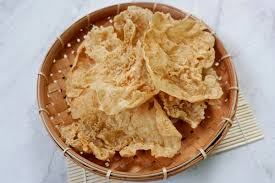

Keripik Kelor
Rp 12.000

Rempeyek Tempe
Rp 10.000
Cemilan Sehat dari Bahan Lokal Indonesia
✅ Terbuat dari bahan alami & organik
✅ Tanpa MSG, tanpa bahan kimia
✅ Lezat, renyah, dan sehat!
Rp 12.000
Rp 10.000
“Rasanya gurih, tapi tetap sehat. Anak-anak suka banget keripik kelornya!”
– Rina, Surabaya
Langsung pesan sekarang melalui WhatsApp!
Pesan via WhatsApp